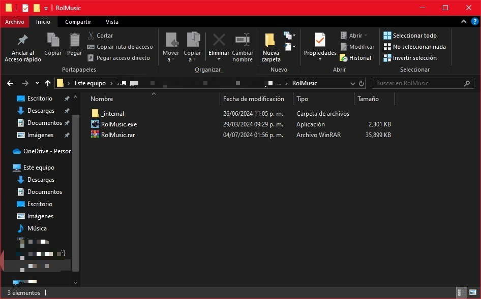
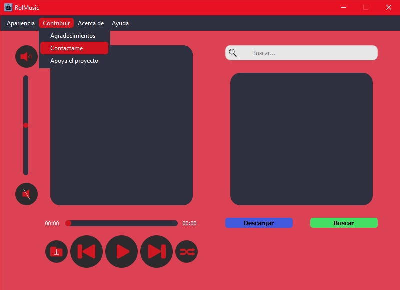

Tutorial de Uso
Paso 1: Descargar la Aplicación
Visita la sección de Descarga y descarga el archivo ejecutable para Windows.
Paso 2: Descomprimir Y Ejecutar
Descomprime el archivo descargado y ejecuta el .exe.
Paso 3: Configuración Inicial
Personaliza el reproductor según tus preferencias.

Paso 4: Uso Básico
Antes de buscar y descargar debes seleccionar una carpeta o una ruta para almacenar los archivos .mp3.
Paso 5: Descarga y disfruta de buena musica.
Utiliza la interfaz principal para buscar, descargar y reproducir tu música favorita.
Paso 6: Resolución de Problemas
En caso de problemas, sugerencias o querer colaborar en el desarrollo del proyecto, contacta con el soporte soporterolmusic@gmail.com.
